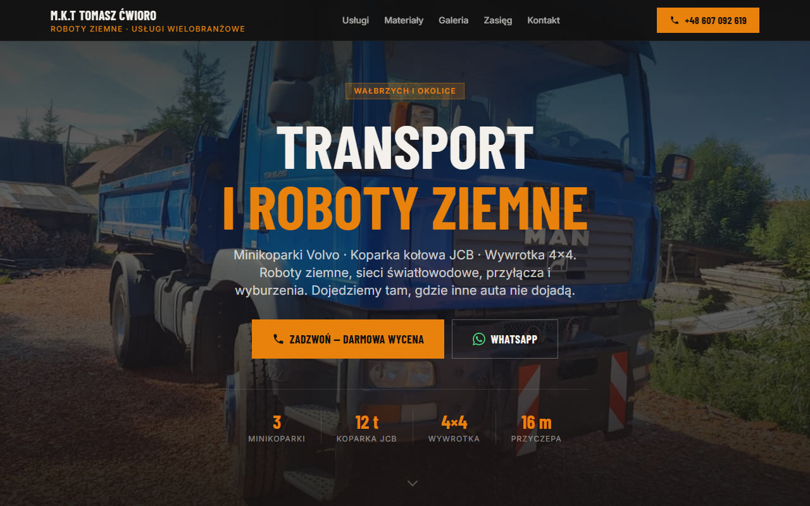
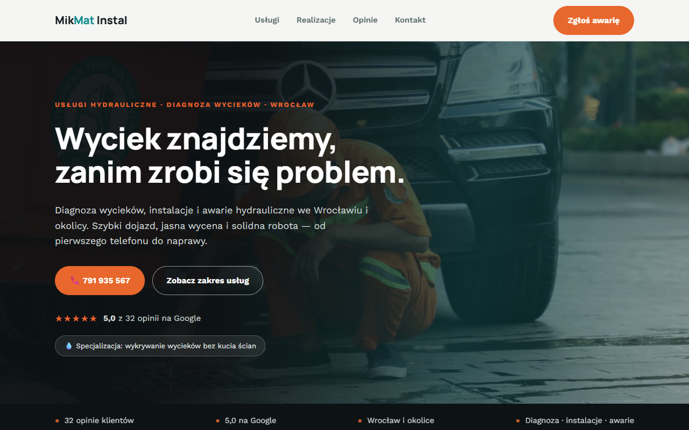
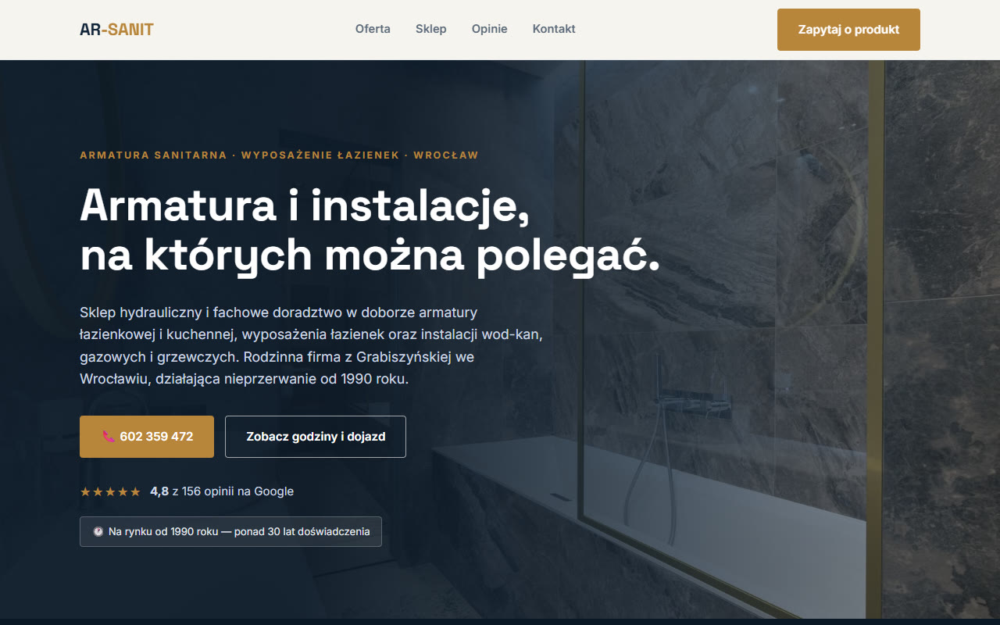

I design and build websites for small and local businesses — hand-built pages that load instantly, look like your business, and make people pick up the phone. No page builders, no bloat, no templates everyone else already has.

A one-page site for a Polish transport and earthworks company: services, machinery, coverage area and reviews — every section funnelling to one action, the phone call. Launched on the client's own domain.
Visit cwioro-robotyziemne.pl →
Emergency-first layout: the phone number is never more than one glance away.

A navy-and-brass storefront feel for a 40-year-old family trade business.
Concept designs are working prototypes created for real local businesses, using licensed stock photography. The full build — with your photos, your colours and your content — happens on commission.
A fast, mobile-first website designed around what your customers actually do: call, book, or visit. Copywriting help, SEO basics and launch on your own domain included.
Your site stays current without you thinking about it — monthly text and photo updates, price and opening-hours changes, and someone to message when anything needs doing.
Google Business Profile tune-ups, seasonal promo graphics and post content that keeps your business showing up where locals are searching.
Launching soonI'm Bartosz — a web designer and developer based in Berlin, working with small and local businesses across Germany and Poland. ClearSite Studio is exactly what it sounds like: clear websites, built one at a time, by the person you actually talk to.
Most of my clients are great at their trade and have the reviews to prove it — they just don't show up properly online. That's the gap I close: a site that looks as professional as your work already is.
Tell me what you do and where — I'll reply with honest advice and, if it's a fit, a free first-look design of your homepage. No obligation either way.
b.soltysik90@gmail.com